作者：创世魂
● 概述
本组件的主要用于快速访问超链接或者邮箱地址。
● Internet地址(写)
“Internet地址”帮助文档如下图：
通过本属性可以设置URL地址到当前组件上，设置后可以直接点击本组件实现访问这个网址。
注意：仅当“类型”属性为“超级链接框.Internet地址”时，本属性才有效。
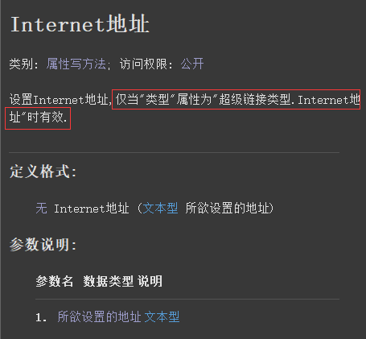
“类型”帮助文档如下图：
用于设置当前组件的点击后的访问类型，只有Internet地址和邮箱地址两种类型。
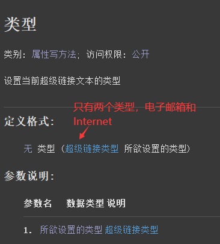
代码编写如下图：
必须同时设置这两个属性才有效。
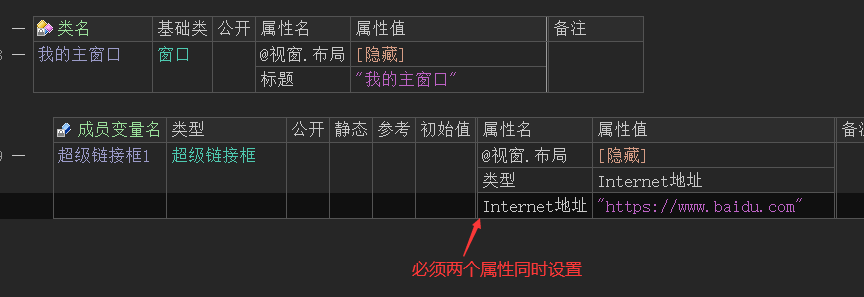
运行效果如下图：
最终当鼠标点击超链接框后，会直接激活外部浏览器访问设置的URL地址。
注：超级链接框默认显示的标题是当前组件设置的“Internet地址”，如果不想显示地址，可以通过“标题”属性修改。
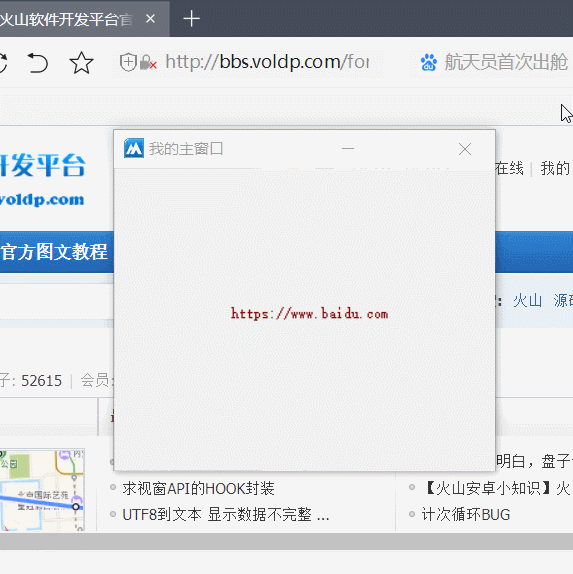
● 文本颜色(写)
帮助文档如下图：
通过本属性可以设置当前组件默认显示的文本颜色。
可以使用“颜色类”中的常量值，也可以使用“0x0000FF”十六进制颜色值。
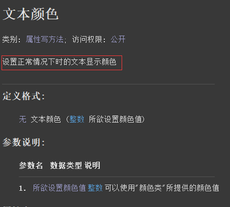
代码编写如下图：
按钮点击后设置本组的文本颜色为黑色。
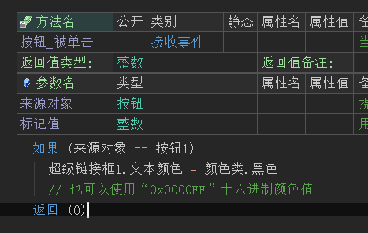
运行效果如下图：
最终可看到默认颜色从蓝色变成黑色。
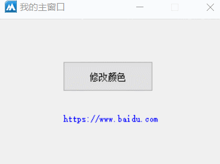
● 热点颜色(写)
帮助文档如下图：
通过本属性可以设置鼠标经过组件时显示的文本颜色。
可以使用“颜色类”中的常量值，也可以使用“0x0000FF”十六进制颜色值。
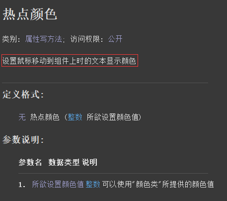
代码编写如下图：
按钮点击后设置本属性值为红色。
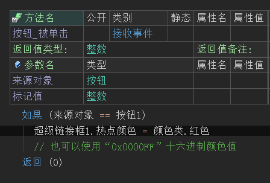
运行效果如下图：
最终可看到鼠标经过时的颜色会被修改为红色。
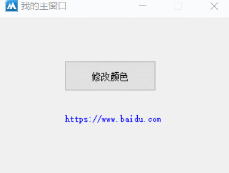
● 访问后颜色(写)
帮助文档如下图：
通过本属性可以设置超链接文本被访问过的颜色。
可以使用“颜色类”中的常量值，也可以使用“0x0000FF”十六进制颜色值。
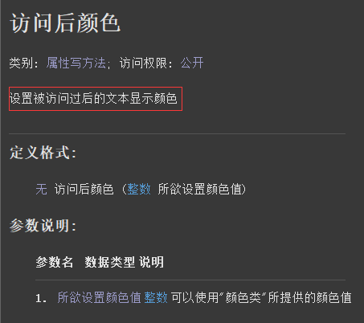
代码编写如下图：
在“超级链接框”的属性栏设置本属性值为红色。
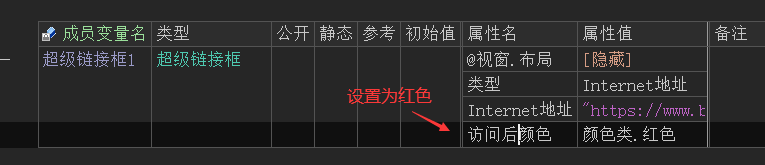
运行效果如下图：
最终可看到当点击后文本颜色会变成红色。
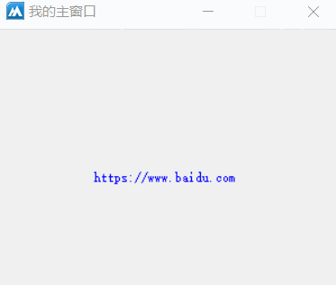
● 背景颜色(写)
帮助文档如下图：
通过本属性可以设置当前组件的背景颜色。
可以使用“颜色类”中的常量值，也可以使用“0x0000FF”十六进制颜色值。
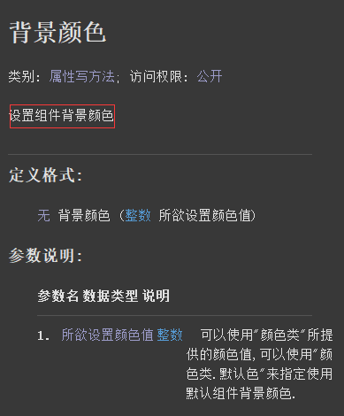
代码编写如下图：
按钮点击后设置本属性值为红色。
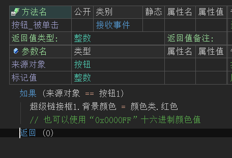
运行效果如下图：
最终可看到背景色被修改为红色。
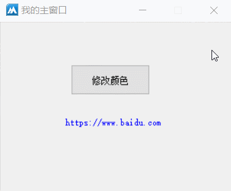
● 开始跳转(事件)
“跳转”帮助文档如下图：
通过本方法可以调用外部浏览器打开组件中存储的超链接地址。
注意：本方法会触发“开始跳转”事件。
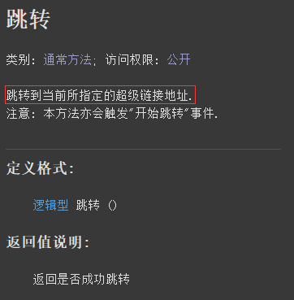
“开始跳转”帮助文档如下图：
当单击组件或者执行“跳转”方法的时候都会触发本事件。
本事件会返回即将跳转的地址。
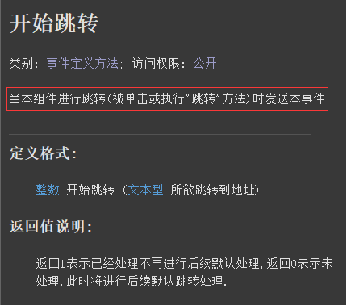
代码编写如下图：
1、按钮点击后执行“跳转()”方法。
2、添加“开始跳转”事件，并弹出一个信息框显示跳转的地址。
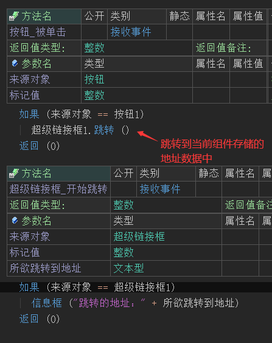
运行效果如下图：
最终点击按钮后会弹出一个信息框，证明事件被触发。
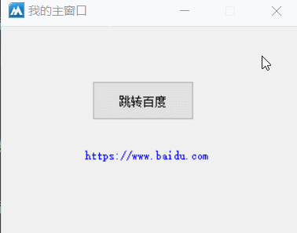